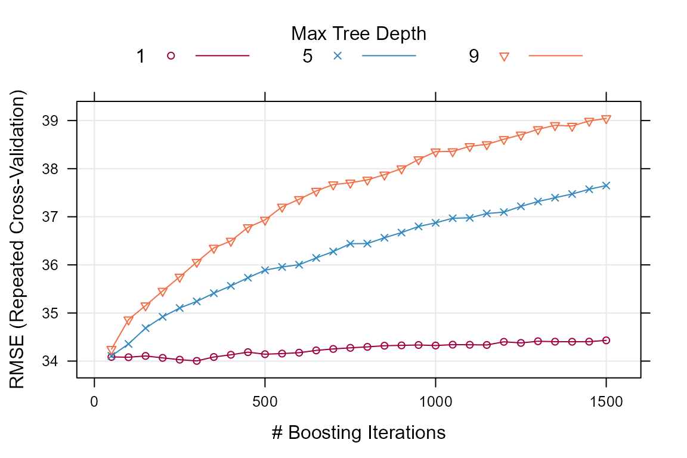
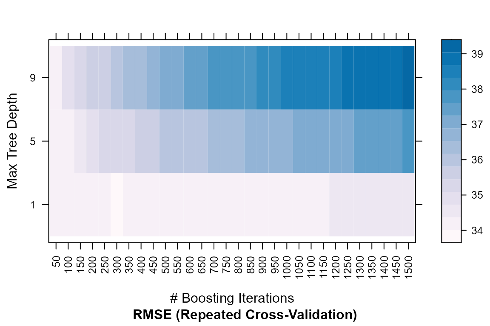
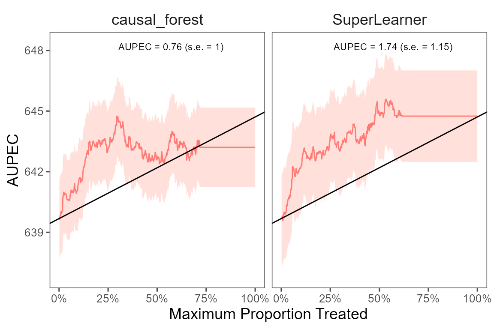

Sample Splitting with Caret/SuperLearner
Source:vignettes/sample_split_caret.Rmd
sample_split_caret.RmdTrain the model with Caret
We can train the model with the caret package (for
further information about caret, see the original
website). We use parallel computing to speed up the computation.
# parallel computing
library(doParallel)
cl <- makePSOCKcluster(5)
registerDoParallel(cl)
# stop after finishing the computation
stopCluster(cl)The following example shows how to estimate the ITR with gradient
boosting machine (GBM) using the caret package. Note that
we have already loaded the data and specify the treatment, outcome, and
covariates as shown in the Sample
Splitting vignette. Since we are using the caret
package, we need to specify the trainControl and/or
tuneGrid arguments. The trainControl argument
specifies the cross-validation method and the tuneGrid
argument specifies the tuning grid. For more information about these
arguments, please refer to the caret
website.
We estimate the ITR with only one machine learning algorithm (GBM)
and evaluate the ITR with the evaluate_itr() function. To
compute PAPDp, we need to specify the
algorithms argument with more than 2 machine learning
algorithms.
library(evalITR)
library(caret)
# specify the trainControl method
fitControl <- caret::trainControl(
method = "repeatedcv", # 3-fold CV
number = 3, # repeated 3 times
repeats = 3,
search='grid',
allowParallel = TRUE) # grid search
# specify the tuning grid
gbmGrid <- expand.grid(
interaction.depth = c(1, 5, 9),
n.trees = (1:30)*50,
shrinkage = 0.1,
n.minobsinnode = 20)
# estimate ITR
fit_caret <- estimate_itr(
treatment = "treatment",
form = user_formula,
trControl = fitControl,
data = star_data,
algorithms = c("gbm"),
budget = 0.2,
split_ratio = 0.7,
tuneGrid = gbmGrid,
verbose = FALSE)
#> Evaluate ITR under sample splitting ...
# evaluate ITR
est_caret <- evaluate_itr(fit_caret)
#> Cannot compute PAPDpWe can extract the training model from caret and check
the model performance. Other functions from caret can be
applied to the training model.
# extract the final model
caret_model <- fit_caret$estimates$models$gbm
print(caret_model$finalModel)
#> A gradient boosted model with gaussian loss function.
#> 100 iterations were performed.
#> There were 53 predictors of which 24 had non-zero influence.
# check model performance
trellis.par.set(caretTheme()) # theme
plot(caret_model) 

Train the model with SuperLearner
Alternatively, we can train the model with the
SuperLearner package (for further information about
SuperLearner, see the
original website). SuperLearner utilizes ensemble method by taking
optimal weighted average of multiple machine learning algorithms to
improve model performance.
We will compare the performance of the ITR estimated with
causal_forest and SuperLearner.
library(SuperLearner)
fit_sl <- estimate_itr(
treatment = "treatment",
form = user_formula,
data = star_data,
algorithms = c("causal_forest","SuperLearner"),
budget = 0.2,
split_ratio = 0.7,
SL_library = c("SL.ranger", "SL.glmnet"))
#> Evaluate ITR under sample splitting ...
est_sl <- evaluate_itr(fit_sl)
# summarize estimates
summary(est_sl)
#> -- PAPE ------------------------------------------------------------------------
#> estimate std.deviation algorithm statistic p.value
#> 1 1.9 1.4 causal_forest 1.4 0.17
#> 2 2.3 1.4 SuperLearner 1.6 0.11
#>
#> -- PAPEp -----------------------------------------------------------------------
#> estimate std.deviation algorithm statistic p.value
#> 1 1.8 1.1 causal_forest 1.6 0.112
#> 2 2.1 1.2 SuperLearner 1.8 0.071
#>
#> -- PAPDp -----------------------------------------------------------------------
#> estimate std.deviation algorithm statistic p.value
#> 1 -0.3 0.97 causal_forest x SuperLearner -0.31 0.76
#>
#> -- AUPEC -----------------------------------------------------------------------
#> estimate std.deviation algorithm statistic p.value
#> 1 1.5 1.0 causal_forest 1.5 0.14
#> 2 1.6 1.1 SuperLearner 1.5 0.14
#>
#> -- GATE ------------------------------------------------------------------------
#> estimate std.deviation algorithm group statistic p.value upper lower
#> 1 -172 107 causal_forest 1 -1.61 0.11 -347 4
#> 2 -145 108 causal_forest 2 -1.35 0.18 -323 32
#> 3 102 109 causal_forest 3 0.94 0.35 -76 281
#> 4 142 109 causal_forest 4 1.31 0.19 -37 321
#> 5 103 108 causal_forest 5 0.95 0.34 -76 281
#> 6 -59 108 SuperLearner 1 -0.55 0.58 -237 118
#> 7 -79 107 SuperLearner 2 -0.73 0.46 -255 98
#> 8 36 109 SuperLearner 3 0.33 0.74 -143 214
#> 9 28 108 SuperLearner 4 0.26 0.79 -150 207
#> 10 104 109 SuperLearner 5 0.95 0.34 -75 283We plot the estimated Area Under the Prescriptive Effect Curve for
the writing score across a range of budget constraints, seperately for
the two ITRs, estimated with causal_forest and
SuperLearner.
# plot the AUPEC
plot(est_sl)